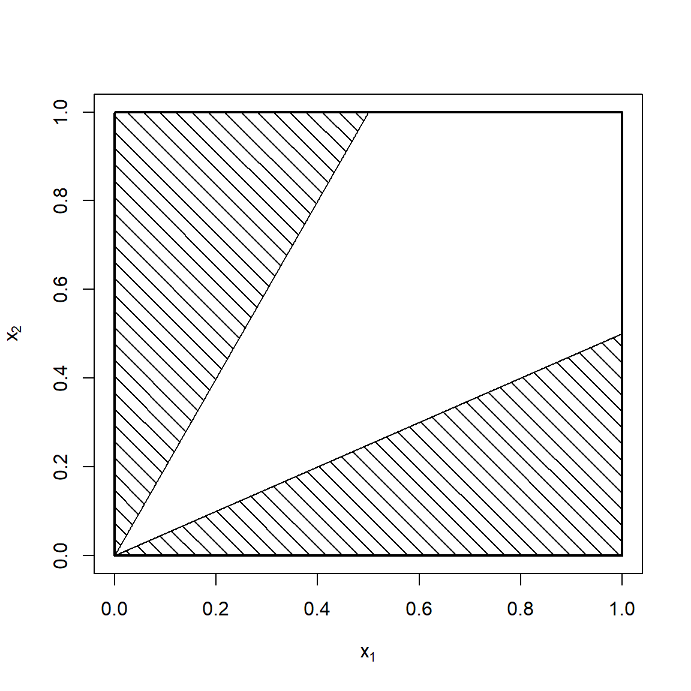

3 Solutions — Modèles statistiques de base
Solution 1.1
a) Les progrès en médecine ont affecté grandement la probabilité de détection précoce du cancer du sein, donc la probabilité de survie. Il y a donc une tendance à la baisse, et ces données ne sont pas identiquement distribuées dans le temps.
b) Puisque chaque lancer est indépendant et identiquement distribué, les 20 lancers sont considérés comme un échantillon aléatoire de taille 20 de lancers de dé.
Solution 1.2
a) Il faudrait utiliser une distribution continue non négative sur l’intervalle \([0,\infty)\) étant donné que la perte financière est nécessairement positive et qu’il n’y a pas de borne supérieure naturelle. Des bons exemples de lois pourraient être : gamma, lognormale, Pareto.
b) La distribution adéquate est la loi binomiale négative. Considérant que chaque sac est indépendant des autres et a une probabilité \(p\) d’être contaminé, la distribution est une loi binomiale négative avec paramètres \(r=15\) et \(p\) inconnu.
c) La loi binomiale est appropriée. Considérant que chaque sac est indépendant des autres et a une probabilité \(p\) d’être contaminé, le nombre total de sacs contaminés suit une loi binomiale avec paramètres de taille \(n=15\) et probabilité \(p\) inconnu.
d) Le contexte est conforme à une distribution normale. La majorité des conducteurs vont tendre vers une vitesse moyenne malgré que certains vont conduire beaucoup plus vite ou lentement ; une distribution en forme de cloche semble donc appropriée. La moyenne \(\mu\) et la variance \(\sigma^2\) de la vitesse réelle des véhicules à cet endroit précis sur l’autoroute sont inconnues.
e) Le contexte suggère une loi Normale. Les câbles devraient avoir une résistance près de \(\mu\), soit celle donnée par le producteur. L’écart-type \(\sigma\) dépendra de la qualité de la précision de la fabrication, et est inconnu.
Solution 1.3
a) On a directement \(f(x) = F^\prime(x) = \alpha \beta x^{\alpha - 1} e^{-\beta x^{\alpha}}\).
b) On a \[ \begin{aligned} \esp{X} &= \int_0^\infty x f(x)\, dx \\ &= \int_0^\infty \alpha \beta x^{\alpha} e^{-\beta x^{\alpha}}\, dx. \end{aligned} \] On effectue le changement de variable \(y = \beta x^{\alpha}\), d’où \(dy = \bm{\alpha \beta x^{\alpha - 1}\, dx}\) et \(x = \left(\frac{y}{\beta}\right)^{\frac{1}{\alpha}}\) et donc \[ \begin{aligned} \esp{X} &= \int_0^\infty \bm{\alpha \beta x^{\alpha - 1}} x e^{-\beta x^{\alpha}}\, \bm{dx} \\ &= \frac{1}{\beta^{1/\alpha}} \int_0^\infty y^{1/\alpha} e^{-y} \,dy \\ &= \frac{\Gamma(1 + \frac{1}{\alpha})}{\beta^{1/\alpha}} \int_0^\infty \frac{1}{\Gamma(1 + \frac{1}{\alpha})}\, y^{1/\alpha} e^{-y} \,dy \\ &= \frac{\Gamma(1 + \frac{1}{\alpha})}{\beta^{1/\alpha}} \end{aligned} \] puisque l’intégrande ci-dessus est la fonction de densité de probabilité d’une loi gamma de paramètre de forme \(\alpha = 1 + \frac{1}{\alpha}\) et de paramètre d’échelle \(\beta = 1\). En procédant exactement de la même façon, on trouve \[ \begin{aligned} \esp{X^2} &= \int_0^\infty x^2 f(x)\, dx \\ &= \int_0^\infty \alpha \beta x^{\alpha + 1} e^{-\beta x^{\alpha}}\, dx \\ &= \frac{1}{\beta^{2/\alpha}} \int_0^\infty y^{2/\alpha} e^{-y} \, dy \\ &= \frac{\Gamma(1 + \frac{2}{\alpha})}{\beta^{2/\alpha}}. \end{aligned} \] Par conséquent, \[ \var{X} = \frac{\Gamma(1 + \frac{2}{\alpha}) - \Gamma(1 + \frac{1}{\alpha})^2}{\beta^{2/\alpha}}. \]
Solution 1.4
Soit \(X\) une variable aléatoire avec distribution Beta\((\alpha,\beta)\). Alors, \[ \begin{aligned} \ex(X) & = \int_0^1 x \frac{\Gamma(\alpha+\beta)}{\Gamma(\alpha)\Gamma(\beta)}x^{\alpha-1}(1-x)^{\beta-1}\d x\\ &=\int_0^1 \frac{\Gamma(\alpha+\beta)}{\Gamma(\alpha)\Gamma(\beta)}x^{\alpha}(1-x)^{\beta-1}\d x. \end{aligned} \] Cette intégrale peut être résolue en reconnaissant la forme similaire à une distribution Beta\((\alpha+1,\beta)\) intégrée sur son domaine, mais avec les mauvaises constantes. On divise et multiplie par les constantes nécessaires pour trouver une intégrale avec valeur de 1. \[ \begin{aligned} \ex(X) & =\frac{\Gamma(\alpha+\beta)}{\Gamma(\alpha)}\frac{\Gamma(\alpha+1)}{\Gamma(\alpha+1+\beta)} \int_0^1 \frac{\Gamma(\alpha+1+\beta)}{\Gamma(\alpha+1)\Gamma(\beta)}x^{\alpha}(1-x)^{\beta-1}\d x\\ &=\frac{\Gamma(\alpha+\beta)}{\Gamma(\alpha+1+\beta)}\frac{\Gamma(\alpha+1)}{\Gamma(\alpha)}\\ &= \frac{\Gamma(\alpha+\beta)}{(\alpha+\beta)\Gamma(\alpha+\beta)}\frac{ \alpha \Gamma(\alpha) }{\Gamma(\alpha)}\\ &=\frac{\alpha}{\alpha+\beta}. \end{aligned} \]
De plus, \[ \begin{aligned} \ex\{X^2\} & = \int_0^1 x^2 \frac{\Gamma(\alpha+\beta)}{\Gamma(\alpha)\Gamma(\beta)}x^{\alpha-1}(1-x)^{\beta-1}\d x\\ &=\int_0^1 \frac{\Gamma(\alpha+\beta)}{\Gamma(\alpha)\Gamma(\beta)}x^{\alpha+1}(1-x)^{\beta-1}\d x\\ & =\frac{\Gamma(\alpha+\beta)}{\Gamma(\alpha)}\frac{\Gamma(\alpha+2)}{\Gamma(\alpha+2+\beta)} \int_0^1 \frac{\Gamma(\alpha+2+\beta)}{\Gamma(\alpha+2)\Gamma(\beta)}x^{\alpha}(1-x)^{\beta-1}\d x\\ &=\frac{\Gamma(\alpha+\beta)}{\Gamma(\alpha+2+\beta)}\frac{\Gamma(\alpha+2)}{\Gamma(\alpha)}\\ &= \frac{\Gamma(\alpha+\beta)}{(\alpha+\beta+1)\Gamma(\alpha+\beta+1)}\frac{ (\alpha+1) \Gamma(\alpha+1) }{\Gamma(\alpha)}\\ &= \frac{\Gamma(\alpha+\beta)}{(\alpha+\beta+1)(\alpha+\beta)\Gamma(\alpha+\beta)}\frac{ (\alpha+1)\alpha \Gamma(\alpha) }{\Gamma(\alpha)}\\ &= \frac{(\alpha+1)\alpha}{(\alpha+\beta+1)(\alpha+\beta)}. \end{aligned} \] La variance peut alors être calculée ainsi : \[ \begin{aligned} \vr(X) &= \ex(X^2) - \{ \ex(X)\}^2 \\ &= \frac{(\alpha+1)\alpha}{(\alpha+\beta+1)(\alpha+\beta)}-\frac{\alpha^2}{(\alpha+\beta)^2} \\ &= \frac{\alpha}{\alpha+\beta}\left[\frac{\alpha+1}{\alpha+\beta+1}-\frac{\alpha}{\alpha+\beta}\right]\\ &= \frac{\alpha\beta}{(\alpha+\beta)^2(\alpha+\beta+1)} \end{aligned} \]
Solution 1.5
Soit \(X\) une variable aléatoire Poisson avec paramètre \(\lambda>0\). Sa fonction génératrice des moments, pour tout \(t \in \mathbb{R}\), est donnée par \[ \begin{aligned} M_X(t) = \ex (e^{tX}) = \sum_{k=0}^\infty e^{tk}\frac{\lambda^k e^{-\lambda}}{k!} = e^{-\lambda}\sum_{k=0}^\infty \frac{\{\lambda e^t\}^k}{k!}. \end{aligned} \] L’équation de droite est la série de Taylor de \(\exp(\lambda e^t)\). Ainsi,\[M_X(t) = e^{-\lambda}e^{\lambda e^t} = \exp\{\lambda(e^t-1)\}.\]La \(k\)e dérivée de \(M\) évaluée à \(t=0\) donne le \(k\)e moment de \(X\). Ainsi, \[\ex(X) = M^\prime_X(0) = \left.\exp\{\lambda(e^t-1)\}\times \lambda e^t\right|_{t=0} = \lambda\]de façon similaire, \[ \begin{aligned} \ex(X^2) & = M^{\prime \prime}_X(0) = \left.\exp\{\lambda(e^t-1)\}\times \lambda^2 e^{2t}+\exp\{\lambda(e^t-1)\}\times \lambda e^{t}\right|_{t=0} = \lambda^2+\lambda \end{aligned} \] Alors,\[\vr(X) = \ex(X^2) - \{\ex(X)\}^2 = \lambda^2+\lambda-\lambda^2=\lambda.\]
Solution 1.6
a) Le support de \(Y\) est \([0,2]\), donc \(F(y)=0\) pour \(y<0\) et \(F(y)=1\) pour \(y>2\). Pour \(0\leq y <1\), \[ F(y)=\Pr[Y\leq y]=\int_0^y x\d x = \frac{y^2}{2}. \] Pour \(1\leq y <2\), \[ F(y)=\Pr[Y\leq y]=\int_0^1 x\d x +\int_1^y (2-x)\d x = 1-\frac{(2-y)^2}{2}. \] Ainsi la fonction de répartition de \(Y\) est \[ F(y)= \begin{cases} 0, & y<0\\ y^2/2, & 0\leq y<1\\ 1- (2-y)^2/2, & 1\leq y <2\\ 1, & y>2. \end{cases} \] b) On souhaite trouver la probabilité que \(10000 Y\) se situe entre 8 500 et 11 500: \[ \begin{aligned} \Pr[8500<10000Y\leq 11500] & = \Pr[0.85<Y\leq 1.15]\\ &=F(1.15)-F(0.85)\\ &=1- \frac{(2-1.15)^2}{2}-\frac{0.85^2}{2}=0.2775. \end{aligned} \]
c) On désire trouver l’espérance du revenu, qui est de 2,10 $ par litre, donc \(\ex[2.10\times 10000Y]=21000\ex[Y]\). On a \[ \begin{aligned} \ex[Y]&=\int_0^1 y^2\d y +\int_1^2 y(2-y)\d y\\ &=\left.\frac{y^3}{3}\right|_0^1+\left.y^2-\frac{y^3}{3}\right|_1^2\\ &=\frac{1}{3}+4-\frac{2^3}{3}-1+\frac{1}{3} = 1. \end{aligned} \] Ainsi, l’espérance de revenu mensuel est de 21 000 $.
Solution 1.7
On doit trouver le point où la fonction \(f(c) = \esp{(X - c)^2}\) atteint son minimum. Pour ce faire, il faut dériver par rapport à \(c\). Or, \(\frac{\text{d}}{\text{d}c} f(c) = -2 \esp{X - c} = 0\) lorsque \(\esp{X} - c = 0\), soit \(c = \esp{X} = \mu\). De plus, il s’agit bien d’un minimum puisque \(\frac{\text{d}^2}{\text{d}^2c} f(c)= 2 > 0\) pour tout \(c\).
Solution 1.8
a) On a \[ \begin{aligned} M_Y(t) &= \esp{e^{Yt}} \\ &= \esp{e^{(aX + b)t}} \\ &= \esp{e^{aXt} e^{bt}} \\ &= e^{bt} \esp{e^{aXt}} \\ &= e^{bt} M_X(at). \end{aligned} \]
b) On a \[ \begin{aligned} M_Y(t) &= \esp{e^{Yt}}\\ &= \esp{e^{(X_1 + \dots + X_n) t}}\\ &= \esp{e^{X_1 t} \cdots e^{X_n t}} \\ \end{aligned} \]
et, par indépendance entre les variables aléatoires,
\[ \begin{aligned} M_Y(t) &= \esp{e^{X_1t}} \cdots \esp{e^{X_nt}} \\ &= \prod_{i = j}^n M_{X_j}(t). \end{aligned} \] Si, en plus, les variables aléatoires \(X_1, \dots, X_n\) sont identiquement distribuées comme \(X\), alors \(M_Y(t) = (M_X(t))^n\).
Solution 1.9
La Loi faible des grands nombres indique que, lorsque \(n\to\infty\), \(\bar X_n\stackrel{P}{\to}\ex[X]\), où \(X_1,\ldots,X_n\) est une suite de variables aléatoires indépendantes et identiquement ditribuées. Cependant, le résultat tient seulement si \(\ex[X^2] < \infty\), ce qui n’est pas le cas ici puisque \[ \begin{aligned} \ex[X^2]=\int_{10}^\infty \frac{200}{x^3}x^2 \d x =\int_{10}^\infty \frac{200}{x} \d x = \left. 200\ln(x)\right|_{10}^\infty = \infty. \end{aligned} \] Ainsi, il n’est pas possible d’appliquer la WLLN dans ce cas.
Solution 1.10
Si \(X\) a la même distribution que \(X_1, \ldots , X_n\) et \(\vr(X)<\infty\), la loi faible des grands nombres implique que, quand \(n \to \infty\),\(\frac{1}{n} \, \sum_{i=1}^n X_i\)converge en probabilité vers \(\esp{X}\). Puisque \(X\) suit une distribution Beta avec paramètres \(\alpha=1\) et \(\beta=4\), \(\esp{X}=\alpha/(\alpha+\beta)=1/5\) et \[\var{X}=\frac{\alpha\beta}{(\alpha+\beta)^2(\alpha+\beta+1)}=\frac{4}{5^2\times 6}=\frac{2}{75}<\infty.\] Donc, la WLLN s’applique et \(\bar X_n\) converge en probabilité vers 1/5.
Solution 1.11
Puisque \(X_{(1)}\) est la plus petite valeur de l’échantillon, on a que \[ \begin{aligned} F_{X_{(1)}}(x) &= \prob{X_{(1)} \leq x} \\ &= 1 - \prob{X_{(1)} > x} \\ &= 1 - \prob{X_1 > x, X_2 > x, \dots, X_n > x}. \end{aligned} \] Or, les variables aléatoires \(X_1, \dots, X_n\) sont indépendantes et identiquement distribuées, d’où \[ \begin{aligned} F_{X_{(1)}}(x) &= 1 - \prob{X_1 > x} \prob{X_2 > x} \cdots \prob{X_n > x} \\ &= 1 - (\prob{X > x})^n \\ &= 1 - (1 - F_X(x))^n. \end{aligned} \]
Solution 1.12
On cherche la probabilité que la plus grande valeur de l’échantillon soit supérieure à 3, soit le complément de la probabilité que toutes les valeurs de l’échantillon soient inférieures à 3: \[ \begin{aligned} \prob{X_{(4)} > 3} &= 1 - \prob{X_{(4)} \leq 3} \\ &= 1 - \prob{X_1 \leq 3} \prob{X_2 \leq 3} \prob{X_3 \leq 3} \prob{X_4 \leq 3} \\ &= 1 - (F_X(3))^4. \end{aligned} \] Or, on aura reconnu en \(f(x)\) la densité d’une loi exponentielle de paramètre \(\lambda = 1\). Par conséquent, \(F_X(x) = 1 - e^{-x}\) et \(\prob{X_{(4)} > 3} = 1 - (1 - e^{-3})^4\).
Solution 1.13
Soit \(m\) la médiane de la distribution. On cherche \(\prob{X_{(1)} > m}\). Avec le résultat de l’exercice 11, \[ \begin{aligned} \prob{X_{(1)} > m} &= 1 - \prob{X_{(1)} \leq m} \\ &= 1 - F_{X_{(1)}}(m) \\ &= 1 - (1 - (1 - F_X(m))^3)\\ &= (1 - F_X(m))^3 \\ &= \frac{1}{8}, \end{aligned} \] car \(F_X(m) = 1 - F_X(m) = 1/2\) par définition de la médiane. Le type de distribution ne joue donc aucun rôle dans cet exercice.
Solution 1.14
On a que \(X\) est distribuée uniformément sur \(\{1, \dots, 6\}\), d’où \(F_X(x) = x/6\), \(x = 1, \dots, 6\). De l’exercice 11, on a que \[ \begin{aligned} F_{X_{(1)}}(x) &= 1 - (1 - F_X(x))^5 \\ &= 1 - \left( 1 - \frac{x}{6} \right)^5 \end{aligned} \] comme la taille d’échantillon est \(n = 5\). Par conséquent, la fonction de masse de probabilité du minimum est \[ \begin{aligned} \prob{X_{(1)} = x} &= \lim_{y \rightarrow x^+} F_{X_{(1)}}(y) - \lim_{y \rightarrow x^-} F_{X_{(1)}}(y) \\ &= \prob{X_{(1)} \leq x} - \prob{X_{(1)} < x} \\ &= \prob{X_{(1)} \leq x} - \prob{X_{(1)} \leq (x - 1)} \\ &= F_{X_{(1)}}(x) - F_{X_{(1)}}(x - 1) \\ &= \left(1 - \frac{x-1}{6} \right)^5 - \bigg( 1 - \frac{x}{6} \bigg)^5 \\ &= \left(\frac{7 - x}{6}\right)^5 - \left(\frac{6 - x}{6}\right)^5. \end{aligned} \]
Solution 1.15
De l’exercice 11, on a \[ \begin{aligned} F_{X_{(1)}}(x) &= 1 - (1 - F_X(x))^n \\ &= 1 - (e^{-\beta x^\alpha})^n \\ &= 1 - e^{-n \beta x^\alpha}, \end{aligned} \] d’où \(X_{(1)} \sim \text{Weibull}(\alpha, n \beta)\). Ainsi, la fonction de densité de probabilité du minimum de l’échantillon est \[ f_{X_{(1)}}(x) = n \beta \alpha x^{\alpha - 1} e^{-n \beta x^\alpha} \] et l’espérance est \[ \esp{X_{(1)}} = \frac{\Gamma(1 + 1/\alpha)}{(n \beta)^{\frac{1}{\alpha}}}. \]
Solution 1.16
À partir de la fonction de répartition, on a \[ \begin{aligned} F_{X_{(1)}, X_{(n)}}(x,y)&= \prob{X_{(1)} \leq x, X_{(n)} \leq y} \\ &= \prob{X_{(n)} \leq y} - \prob{X_{(1)} > x, X_{(n)} \leq y} \\ &= \prob{X_1 \leq y, \dots, X_n \leq y} - \prob{x < X_1 \leq y, \dots, x < X_n \leq y} \\ &= (F(y))^n - (F(y)-F(x))^n, \quad \text{car iid.} \end{aligned} \] Donc, pour \(x < y\),\[f_{X_{(1)}, X_{(n)}}(x,y) = \frac{\d F_{X_{(1)}, X_{(n)}}(x,y)}{\d x \d y} = n (n - 1) (F(y) - F(x))^{n - 2} f(x) f(y).\]
Solution 1.17
On pose \[r = y - x \text{ et } t= \frac{x + y}{2}\]ce qui est équivalent à\[ x = -\frac{r}{2} + t \text{ et } y = \frac{r}{2} + t.\]Le jacobien de la transformation de \((x, y)\) vers \((r, t)\) est \[ J = \begin{vmatrix} -1/2 & 1 \\ 1/2 & 1 \end{vmatrix} = -1. \] On a donc que la densité conjointe de l’étendue \(R\) et de la mi-étendue \(T\) est \[ f_{R, T}(r, t) = n (n - 1) \left( F_X\left(t + \frac{r}{2}\right) - F_X\left(t - \frac{r}{2}\right) \right)^{n - 2} f_X\left(t + \frac{r}{2}\right) f_X\left(t - \frac{r}{2}\right), \] pour \(r > 0\) et \(-\infty < t < \infty\).
Solution 1.18
Ici, \(f_X(x)=1\) pour \(x\in(0,1)\) et \(F_X(x)=x\), pour \(x\in(0,1)\). Selon l’exercice 17, on trouve que \[ \begin{aligned} f_{R, T}(r, t) &= n (n - 1)\{ F_X(t + r/2) - F_X(t - r/2)\}^{n - 2} f_X(t + r/2) f_X(t - r/2)\\ &= n (n - 1)\{ (t + r/2) - (t - r/2)\}^{n - 2}\\ &= n (n - 1) r^{n-2}, \end{aligned} \] pour \(0 < r < 1\) et \(t + r/2 \in(0,1)\) et \(t - r/2\in(0,1)\).Ainsi, \[ \begin{aligned} t + \frac{r}{2} < 1 &\implies \; t < 1 - \frac{r}{2} \\ t - \frac{r}{2} > 0 &\implies \; t > \frac{r}{2} \\ &\implies \frac{r}{2} < t < 1 - \frac{r}{2}. \end{aligned} \] Par conséquent, \[ \begin{aligned} f_R(r) &= n (n - 1) r^{n - 2} \int_{r/2}^{1 - r/2} dt \\ &= n (n - 1) r^{n - 2} (1 - r), \quad 0 < r < 1. \end{aligned} \]
Solution 1.19
Soit \(R\) l’étendue de l’échantillon aléatoire. Avec l’exercice 18, on sait que \[ f_R(x) = n (n - 1) x^{n - 2} (1 - x), \text{ pour } x\in(0,1). \] Par conséquent \[ \begin{aligned} \Prob{R \leq \frac{1}{2}} &= \int_{0}^{1/2} f_X(x)\, dx\\ &= (4)(3)\int_{0}^{1/2} x^2 (1 - x)\, dx\\ &= \frac{5}{16}. \end{aligned} \]
Solution 1.20
On a que \(X \sim \text{Bêta}(1, 2)\), c’est-à-dire que \(f_X(x) = 2(1 - x)\), \(0 < x < 1\). Soit \(X_1, X_2\) un échantillon aléatoire tiré de cette densité. Par indépendance, on a \[ \begin{aligned} f_{X_1 X_2}(x_1, x_2) &= f_{X_1}(x) f_{X_2}(x) \\ &= 4 (1 - x_1)(1 - x_2). \end{aligned} \] On cherche \(\prob{X_2 \geq 2X_1 \cup X_1 \geq 2X_2}\). Par définition, \[ \prob{X_1 \geq 2X_2 \cup X_2 \geq 2X_1} = \iint\limits_{\mathcal{R}} f_{X_1 X_2}(x_1, x_2) \, dx_2\, dx_1, \] où \(\mathcal{R}\) est la région du domaine de définition de \(f_{X_1X_2}\) telle que \(x_1 > 2x_2\) ou \(x_2 > 2x_1\). Cette région est représentée à la figure 2.1. On a donc \[ \begin{aligned} \prob{X_1 \geq 2X_2 \cup X_2 \geq 2X_1} &= 4 \int_0^{1/2} \int_{2x_1}^1 (1 - x_1)(1 - x_2)\, dx_2\,dx_1 \\ &\phantom{=} + 4 \int_0^{1/2} \int_{2x_2}^1 (1 - x_1)(1 - x_2)\, dx_1\,dx_2 \\ &= 4 \int_0^{1/2} (1 - x_1) \left( \frac{1}{2} - 2x_1 + 2x_1^2 \right)\, dx_1 \\ &\phantom{=} + 4 \int_0^{1/2} (1 - x_2) \left( \frac{1}{2} - 2x_2 + 2x_2^2 \right)\, dx_2 \\ &= \frac{7}{12}. \end{aligned} \]
: Domaine de définition de \(f_{X_1X_2}(x_1, x_2) = 4 (1 - x_1)(1 - x_2)\), \(x_1, x_2 \in (0, 1)\). Les zones hachurées représentent les aires où \(x_2 > 2x_1\) ou \(x_1 > 2x_2\).}
Solution 1.21
Soit \(T = (X_{(1)} + X_{(n)})/2\) la mi-étendue et \(R\) l’étendue. On sait que, pour \(r > 0\) et \(-\infty < t < \infty\), \[ f_{RT}(r, t) = n(n-1)r^{n - 2}. \] On doit calculer la densité marginale de \(T\). Il faut voir que le domaine de \(R\) (et donc le domaine d’intégration) dépend indirectement de \(T\).
Le domaine de \(T\) est d’abord \(0 \leq t \leq 1\) comme \(X_{(1)}\) et \(X_{(n)}\) sont chacun au maximum 1. Leur somme donne au maximum 2. On conclut que $T = (0, 1) $.
Alors, si \(0 \leq t \leq 1/2\), on doit avoir \(0 < r < 2t\). Par contre, si \(1/2 < t < 1\), il faut que \(0 < r < 2(1-t)\). On obtient \[ \begin{aligned} f_T(t) &= \begin{cases} n(2t)^{n-1}, & 0 < t < 1/2 \\ n(2(1 - t))^{n - 1}, & 1/2 < t < 1. \end{cases} \end{aligned} \] Ainsi, \[ \begin{aligned} \esp{T} &= 2^{n - 1} n \left( \int_0^{1/2}t^n\,dt + \int_{1/2}^1 t (1 - t)^{n - 1}\, dt \right) \\ &= 2^{n-1}n \left( \frac{0,5^{n+1}}{n+1} + \int_{1/2}^1 t (1 - t)^{n - 1}\, dt \right) \end{aligned} \]
Pour l’intégrale entre \(t = \frac{1}{2}\) et \(t = 1\), on utiliser l’intégration par parties en posant \(u = t\) et \(\text{d}v = (1 - t)^{n-1}\text{d}t\). Ainsi, on obtient \[ \begin{aligned} \esp{T} &= 2^{n-1}n \left( \frac{0,5^{n+1}}{n+1} + \left[\frac{t(1-t)^n}{n}\right]_{\frac{1}{2}}^1 + \int_{1/2}^1 \frac{(1-t)^n}{n}\, dt \right)\\ &= 2^{n-1}n \left( \frac{0,5^{n+1}}{n+1} + \frac{1}{2^{n+1}n} + \frac{1}{n(n+1)2^{n+1}} \right)\\ &= 2^{n-1}n \left( \frac{0,5^{n+1}}{n+1} + \frac{n+2}{2^{n+1}n(n+1)} \right)\\ &= \frac{1}{2} \end{aligned} \]
Solution 1.22
On sait que \(X_i \sim U(0, 1)\). On trouve la fonction de répartition du minimum \(X_{(1)}\) avec\[ F_{X_{(1)}}(x)= 1 - (1 - F_X(x))^n = 1 - (1-x)^n ,\] d’où sa fonction de densité est\[ f_{X_{(1)}}(x)=\frac{\d}{\d x} F_{X_{(1)}}(x) = n(1-x)^{n-1}\] qui peut se réécrire sous la forme \[ f_{X_{(1)}}(x)=\frac{\Gamma(1+n)}{\Gamma(1)\Gamma(n)}x^{1-1}(1-x)^{n-1}. \] On remarque que \(X_{(1)} \sim \text{Bêta}(1, n)\). De la même façon pour \(X_{(n)}\),\[ F_{X_{(n)}}(x)= (F_X(x))^n =x^n \text{ et }f_{X_{(n)}}(x)=\frac{\d}{\d x} F_{X_{(n)}}(x) = n x^{n-1}\] qui peut se réécrire sous la forme \[ f_{X_{(n)}}(x)=\frac{\Gamma(n+1)}{\Gamma(n)\Gamma(1)}x^{n-1}(1-x)^{1-1}. \] On remarque que \(X_{(n)} \sim \text{Bêta}(n, 1)\). Ainsi, depuis l’exercice 16, la densité conjointe de \((X_{(1)},X_{(n)})\) peut être exprimée comme suit, pour \(0<x<y<1\),\[f_{X_{(1)},X_{(n)}}(x, y) = n(n - 1)(y - x)^{n-2}.\]Ainsi, \[ \Esp{X_{(1)}X_{(n)}} = n (n - 1) \int_0^1 x \int_x^1 y(y - x)^{n-2}\,dy\,dx. \] L’intégrale intérieure ci-dessus se résoud par parties en posant \(u = y\) et \(dv = (y - x)^{n - 2}\,dy\). On obtient alors \[ \begin{aligned} \Esp{X_{(1)}X_{(n)}} &= n(n - 1) \int_0^1 x \left( \frac{(y-x)^{n-1}y}{n - 1} - \frac{1}{n - 1} \int_x^1 (y - x)^{n - 1}\, dy \right)\, dx\\ &= n \int_0^1 x (1 - x)^{n-1}\, dx - \int_0^1 x (1 - x)^n \,dx \\ &= \frac{1}{n+1} - \frac{1}{(n+1)(n+2)}\\ &= \frac{1}{n+2}, \end{aligned} \] en intégrant une seconde fois par parties. Par conséquent, \[ \begin{aligned} \Cov{X_{(1)}, X_{(n)}} &= \Esp{X_{(1)} X_{(n)}} - \Esp{X_{(1)}}\Esp{X_{(n)}} \\ &= \frac{1}{n + 2} - \left( \frac{1}{n + 1} \right) \left( \frac{n}{n + 1} \right) \\ &= \frac{1}{(n + 1)^2 (n + 2)}. \end{aligned} \] a) On a \[ \begin{aligned} \Esp{R} &= \Esp{X_{(n)}} - \Esp{X_{(1)}}\\ &= \frac{n}{n+1} - \frac{1}{n+1}\\ &= \frac{n-1}{n+1} \end{aligned} \] et \[ \begin{aligned} \Var{R} &= \Var{X_{(1)}} + \Var{X_{(n)}} - 2\, \Cov{X_{(1)}, X_{(n)}}\\ &= \frac{n}{(n+1)^2(n+2)} + \frac{n}{(n+1)^2(n+2)} - \frac{2}{(n+1)^2(n+2)} \\ &=\frac{2n-2}{(n+1)^2(n+2)}. \end{aligned} \]
b) On a \[ \begin{aligned} \Esp{T} &= \frac{\Esp{X_{(1)}} + \Esp{X_{(n)}}}{2}\\ &= \frac{1}{2}\left(\frac{n}{n+1} + \frac{1}{n+1}\right)\\ &= \frac{1}{2} \end{aligned} \] et \[ \begin{aligned} \Var{T} &= \frac{\Var{X_{(1)}}+\Var{X_{(n)}} + 2\,\Cov{X_{(1)}, X_{(n)}}}{4}\\ &= \frac{1}{4} \left[ \frac{n}{(n+1)^2(n+2)} + \frac{n}{(n+1)^2(n+2)} + \frac{2}{(n+1)^2(n+2)} \right] \\ &= \frac{1}{2(n+1)(n+2)}. \end{aligned} \]